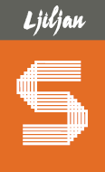

Mislite li graditi, zidati ili popravljati; planirate li sijati, saditi i ograditi - uvijek ćete trebati neki alat i hrpu materijala
Trgovine u kojima sam kupio većinu materijala:
Neke stvari ne možeš sam...
Obrti i usluge:
Ljiljan S, Ivanić grad

Ovdje često kupujem. Pozicija odmah uz obilaznicu, nema probijanja kroz promet; cijenom povoljni, asortiman raznovrstan. Uglavnom nađem sve što mi Na utovar se ne čeka dugo.